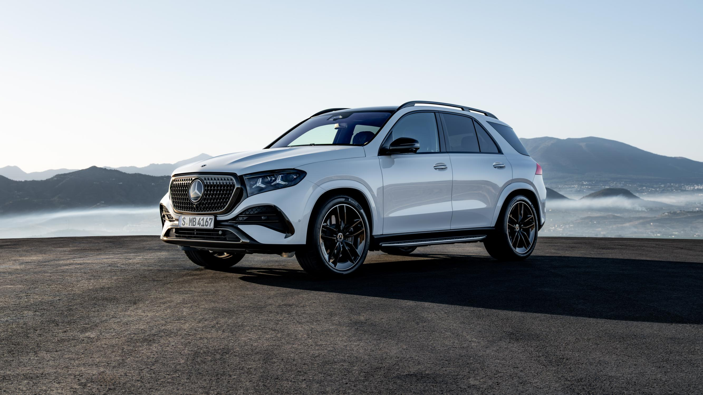

GLE SUV · 가죽
231A 블랙, 234A 비치 브라운 / 블랙, 235A 마키아토 베이지 / 블랙
넉넉한 짐 공간을 갖춘 SUV와 날렵한 쿠페. 달라진 실내 화면과 색상까지 사진으로 편하게 살펴보세요.
SUV와 쿠페, 두 가지 선택
MY27 LINEUP
지붕선과 2열 구성부터 비교해 보세요.
| 비교 항목 | GLE 450 4MATIC AMG Line | GLE 450 4MATIC Coupé |
|---|---|---|
| 차체 | SUV | 쿠페형 SUV |
| 외장 패키지 | AMG Line | AMG Line |
| 2열 시트 | 열선 · 전동 조절 | 열선 |
| 시트 소재 | 가죽 | 나파 가죽 |
| 정품 휠 | 21인치 AMG 5 트윈 스포크 | 21인치 AMG 5 트윈 스포크 |
| 인테리어 트림 | 앤트러사이트 오픈포어 오크 우드 | 앤트러사이트 오픈포어 오크 우드 |
EQUIPMENT
국내 MY27 공통 기본 사양입니다.
| 항목 | 내용 |
|---|---|
| 엔진·구동 | M256M EVO 직렬 6기통 가솔린 · 4MATIC 사륜구동 |
| 승차감 | AIRMATIC 에어 서스펜션 |
| 주행 보조 | MB.DRIVE 어시스트 · 브레이크 어시스트 · 차선 이탈 방지 · 사각지대 어시스트 플러스 |
| 화면·사운드 | MB.OS 기반 4세대 MBUX · 슈퍼스크린 · 헤드업 디스플레이 · 부메스터® 3D 서라운드 사운드 |
| 조명·루프 | 디지털 라이트 · 상향등 어시스트 · 앰비언트 라이트 · 파노라믹 루프 |
| 편의 | 파워클로징 · 전동 트렁크 · 어쿠스틱 컴포트 패키지 · 매직 비전 컨트롤 |
| 시트 | 앞좌석 열선·통풍·메모리 · 뒷좌석 열선 |
| 주차·충전 | 360° 카메라 주차 패키지 · PARKTRONIC · 앞좌석 무선 충전 |
아래 사진을 누르면 큰 사진이 바로 바뀝니다. 실내에는 운전석부터 조수석까지 이어지는 MBUX 슈퍼스크린이 들어갑니다.
사진은 신형 모델의 디자인 참고용입니다. 국내 판매 사양 및 주문 가능 조합은 상담에서 확인해 주세요.
COLOR & MATERIAL
실내는 앤트러사이트 오픈포어 오크 우드 트림과 조합됩니다.
231A 블랙, 234A 비치 브라운 / 블랙, 235A 마키아토 베이지 / 블랙
801A 블랙, 804A 비치 브라운 / 블랙, 885A 화이트 / 블랙, 887A 클래식 레드 / 블랙
주문 가능한 외장 색상과 외장·실내 조합은 상담에서 확인해 드립니다.
FEATURES IN PLAIN LANGUAGE
국내 MY27 기본 사양을 일상에서 체감하는 차이로 풀어봤습니다.
출발할 때나 고속도로에서 속도를 올릴 때 여유 있게 힘을 냅니다.
공기 스프링이 노면의 충격을 받아 줍니다. 방지턱이나 울퉁불퉁한 길을 지날 때 차체가 덜 출렁이도록 돕습니다.
앞차와의 거리와 속도를 조절하고 차로를 따라 달리도록 돕는 기능입니다. 정체 구간에서 반복되는 가속과 감속의 부담을 덜어 줍니다. 운전자는 계속 전방을 살피고 직접 제어해야 합니다.
운전석 계기판과 중앙 화면, 조수석 화면이 대시보드 하나로 이어집니다. 운전자는 주행 정보를, 동승자는 자기 자리에서 이용할 화면을 볼 수 있습니다.
차 안 여러 곳에서 소리가 들려, 좋아하는 음악의 보컬과 악기를 더 입체적으로 즐길 수 있습니다.
넓은 유리 지붕으로 햇빛이 들어와 뒷좌석에서도 실내가 한결 밝고 탁 트이게 느껴집니다.
밤에 전방을 비춰 어두운 도로의 윤곽을 살피기 쉽게 돕습니다.
속도와 길 안내를 앞유리에서 확인할 수 있어 주행 중 계기판을 내려다보는 횟수를 줄여 줍니다.
차음 유리가 바람과 도로에서 들어오는 소리를 줄여 동승자와 대화하거나 음악을 듣기 편해집니다.
주문 가능한 색상 조합과 예상 출고 일정은 사전예약 상담에서 확인해 드립니다.
자주 싣는 짐과 원하는 실내 색상을 알려 주세요. SUV와 쿠페의 국내 사양, 주문 가능한 조합과 예상 출고 일정을 확인해 드립니다.
사전예약 상담 신청